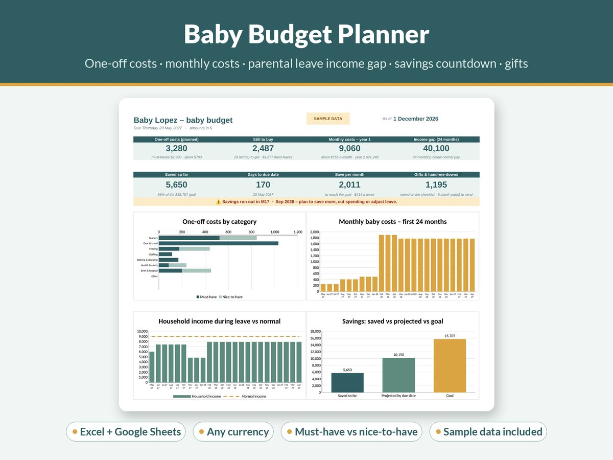

How Much Does a Baby Cost in the First Year? How to Estimate and Plan for It

"How much does a baby cost?" is one of the most searched questions by new parents, and the honest answer is: it depends enormously. Where you live, whether you need paid childcare, how long you take off work, what your health system covers and how much you buy new rather than second-hand can each swing the total by thousands.
That's why national averages are of limited use for planning. A figure built from someone else's rent, childcare prices and shopping habits won't tell you what your first year will cost.
What you can do is build your own estimate. It takes an evening, and it turns a vague worry into a number you can actually save towards. This guide shows you how.
The four parts of a first-year baby budget
Almost every first-year cost falls into one of four buckets:
- One-off costs: things you buy once, mostly before the birth.
- Ongoing monthly costs: nappies, formula or feeding supplies, clothes as they grow, childcare.
- The income gap: the drop in household income while one or both parents are on leave.
- Birth and health costs: depending on your country and cover, anything from almost nothing to a significant bill.
For most families, the third item, lost income, is the biggest and the most overlooked. It's worth giving it the most attention.
Part 1: One-off costs
Start with a checklist and be ruthless about what's genuinely needed from day one. A newborn needs somewhere safe to sleep, a way to travel safely by car if you drive, feeding supplies, nappies, clothes and basic bathing and health items. Much of the rest can wait or never be needed.
Group your list by area:
- Sleeping: cot, bassinet or crib, mattress, fitted sheets, sleeping bags or swaddles.
- Travel: car seat (check your local safety standard), pram or stroller, a carrier.
- Feeding: bottles, a breast pump if needed, steriliser, burp cloths, a high chair later in the year.
- Clothing: a small set in a few sizes. Babies outgrow the smallest sizes quickly.
- Changing and bathing: a changing mat, towels, a baby bath or support, nappy-changing basics.
- Health and safety: thermometer, first-aid basics, stair gates and socket covers for later.
- Birth and hospital: your hospital bag and anything your birth plan needs.
For each item, mark it must-have or nice-to-have, and decide how you'll get it: buy new, buy second-hand, borrow, receive as a gift or take a hand-me-down.
That last column is where the big savings are. Many families receive or borrow a large share of the basics. Two exceptions worth knowing: many safety organisations advise care with second-hand car seats (you can't always tell whether one has been in a crash or is past its expiry date) and second-hand cot mattresses. Check your local guidance.
Add up the estimated cost of the must-haves you'll actually be buying. That's your one-off total.
Part 2: Ongoing monthly costs
Next, list the costs that repeat. For each one, note the month it starts and the month it stops, because baby costs change shape through the year.
- Nappies and wipes: from birth, usually through the whole first year and beyond. Cloth nappies cost more up front and less later.
- Feeding: formula, if you use it, can be a substantial monthly cost. Solid food usually starts partway through the first year and grows from there.
- Clothing: small, frequent top-ups as the baby grows.
- Toiletries and health: creams, medicines, a few doctor's visits depending on your system.
- Childcare: often the largest single monthly cost, if you need it. It typically starts when a parent returns to work, which means it begins exactly as the income gap closes.
- Extra household costs: more laundry, more heating, a bigger grocery shop, possibly a bigger car or more space.
Multiply each by the number of months it applies within the first year, then add them up. Laying it out month by month shows you when the expensive months are coming, which is more useful than a single yearly figure.
Part 3: The parental leave income gap
This is where your own country's rules matter most, so look up the official information for where you live and work. Three examples show how different they can be:
- New Zealand: eligible primary carers can receive up to 26 weeks of government-funded parental leave payments, provided they meet the work requirements and aren't working during that period (Employment New Zealand).
- United Kingdom: Statutory Maternity Pay can be paid for up to 39 weeks: 90% of average weekly earnings for the first 6 weeks, then a flat weekly rate (or 90% of earnings, if that's lower) for the remaining 33 weeks (GOV.UK).
- United States: the Family and Medical Leave Act gives eligible employees of covered employers up to 12 workweeks of unpaid, job-protected leave for the birth of a child. Any pay during that time depends on your employer or state (US Department of Labor).
Your employer may top up the government scheme, and self-employed parents may have different rules. Partners may have their own leave entitlements too.
To estimate the gap:
- Write down each parent's normal monthly take-home pay.
- Break the leave into phases: for example, a period of full employer pay, a period on government payments, and a period of unpaid leave.
- For each phase, write down the expected monthly income.
- Compare household income during each phase with your normal monthly spending plus the new baby costs.
The difference in each month is the gap. Add up the gaps across the leave period. For many families, this single number is larger than all the one-off purchases combined.
Part 4: Birth and health costs
Depending on your country and insurance, there may be costs for antenatal care, the birth itself, hospital stays or extras such as private scans or classes. Check your public health system's coverage and your insurance policy's maternity terms early. Waiting periods can apply to new policies.
Putting it together: your savings target
Now add up the pieces:
- One-off costs you still need to buy
- plus any shortfall during leave (the income gap minus any spending you can cut)
- plus expected health costs
- plus a small buffer for surprises
That's your savings target. Divide it by the number of months (or weeks) until the due date to get a monthly or weekly savings amount. If the amount looks impossible, work through the levers below and recalculate.
Levers that make the biggest difference
- Borrow and accept hand-me-downs. Babies use most things for only a few months.
- Delay the nice-to-haves. Many items aren't needed until month four, six or later.
- Plan leave phases deliberately. Small changes in when each parent takes leave can change the gap considerably.
- Check your entitlements. Government payments, tax credits, employer schemes and childcare subsidies vary and are easy to miss.
- Trim regular spending ahead of time. Practising your on-leave budget before the baby arrives tells you whether it's realistic, and banks the difference.
- Keep a gift and thank-you list. It helps you see what you've already been given, so you don't buy duplicates.
How long should you plan for?
This guide focuses on the first year, but it's worth looking at the second year too. Childcare costs, if you'll need them, often run for a full year or longer once they start, and they tend to begin around the point savings are lowest. Projecting 24 months avoids an unpleasant surprise at month thirteen.
A planner that does the maths
Our Baby Budget Planner follows this exact structure. It includes a 45-item starter checklist marked must-have or nice-to-have, with how you'll get each item. It projects monthly costs over 24 months, models up to three leave phases for each parent to show the income gap and your savings runway, and suggests a savings goal with a per-month and per-week countdown to the due date. There's also a tracker for gifts, hand-me-downs and thank-you notes. It works in Excel and Google Sheets, in any currency.
Still planning the wedding first? See our wedding budget breakdown by category.
The short version
- Ignore national averages and build your own estimate.
- List one-off costs, mark must-haves, and decide what you'll borrow or receive.
- List monthly costs with start and end months, including childcare.
- Look up your country's parental leave rules and calculate the income gap phase by phase.
- Add it up, add a buffer, and divide by the months until the due date.
This guide is general information, not financial, medical or legal advice. Leave entitlements and payment rates change; always check the official source for your country and situation. Ask your midwife, doctor or local safety authority for advice on safe sleep and car seats.
More guides
- A Simple Budget Template for Beginners (and How to Fill It In)
- How to Budget on an Irregular Income (A Step-by-Step Method)
- Zero-Based Budgeting Step by Step: Give Every Dollar a Job
- Sinking Funds Explained: How to Stop Big Bills Wrecking Your Budget
- How to Budget on a Low Income: A Practical, Judgement-Free Guide
- Debt Snowball vs Avalanche: Which Is Better? (With a Worked Example)
- Small Business Bookkeeping for Beginners: A Simple System for Freelancers and Sole Traders
- Wedding Budget Breakdown by Category: A Practical Starting Split
- How Much to Spend on Christmas per Child (and How to Set a Christmas Budget)
- How to Set Up a 2027 Planner You'll Actually Use
- How to Write a Resume With No Experience (With Examples)